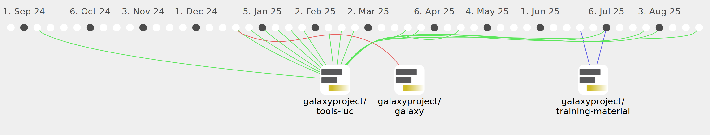

SantaMcCloud

Commits all-time: 106
Commits last year: 89

(84)
- 91090b1
- 5b1dd77
- a975d7b
- 06c4c65
- 868dc3a
- 9ad5e9f
- 991f1bd
- 5bf3b2b
- cdc4a23
- 2617364
- f93520a
- 9071a35
- 6a9629b
- fecf9b3
- c1fe391
- 6a0f306
- 23e2e3f
- eab609b
- 5cd463f
- 3bbd5cf
- 72923cb
- 355e61d
- 4cd89a4
- 049f42f
- 7cf04f0
- 6137659
- a619659
- df467de
- 63fee1a
- 7783e4d
- 26258c9
- f1cb679
- 74610a0
- 2938c46
- 6955d2a
- 11d2d3c
- 4452056
- 14d4693
- 7716185
- d7c567c
- e5adb2d
- c4e0421
- 083bde6
- c743cbc
- d61f03a
- 35f274a
- fea609e
- 9c4a982
- df64c8d
- c9317d6
- f4ac6ac
- 36c6c6f
- 73c835c
- ea0fd02
- 1f4dd7c
- f605637
- 0c1f911
- bb7b0cb
- 9f42856
- b796767
- 7b09285
- 5e03e43
- 5ee0a21
- 09cdebd
- a9fc83e
- bd206c6
- 9550a4f
- c9b2202
- 094719c
- 2d4c738
- 12cd01f
- e44620b
- 2c9e371
- 88a792d
- da5329e
- cfd454c
- 7992da6
- 3455a7c
- 9a2df21
- eed731d
- 21b9af7
- 3693937
- a298275
- f33c09b
(3)
(2)